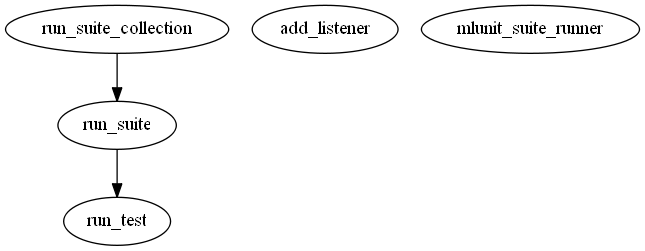

Master index
Index for src\@mlunit_suite_runner
Dependency Graph for src\@mlunit_suite_runner

Generated on Wed 17-Jun-2015 13:13:00 by
m2html
© 2005
 Master index
Master index Master index
Master index